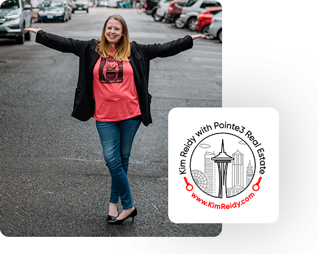

Director of Relocation / Senior Broker at Pointe3 Real Estate

Director Of Relocation / Senior Broker
Kim Reidy moved to Seattle in the fall of 1999 from Harrisburg, PA. She started working in the restaurant industry and quickly grew into management roles, obtaining her first-level sommelier certificate and leading teams in fast-paced customer service environments.
Kim was drawn to the real estate industry in the summer of 2010 when she joined Pointe3 Real Estate and Seattle Rental Group as a Relocation Agent. She grew into a top leadership role within the company and was promoted to Director of Relocation, where she runs the rental finding arm of the business and oversees the entire relocation team. Kim is responsible for the daily coordination of dozens of major corporations, top relocation firms, and relocating clients.
As a Senior Broker, Kim mentors new real estate agents at Pointe3 to help them with transaction compliance and winning deals for their own clients. She has dedicated her career to the local real estate market and is devoted to matching prospective buyers with not only the perfect home, but the perfect neighborhood. Because of this, she's known as a local "neighborhood whisperer."
Kim also excels at helping owners sell their homes for the best price in the most efficient and effective ways. Her intimate knowledge of the industry, including her pulse on corporate relocation trends, gives her an unmatched edge in our market.
Kim's commitment to providing top-notch customer service to each client is a hallmark of her professional ethic. She strives to be more than just a Broker — she possesses a genuine passion for getting to know her clients and their most important needs.
In her free time, you can find Kim enjoying the local music scene, trying out new restaurants, and visiting Seattle's museums.